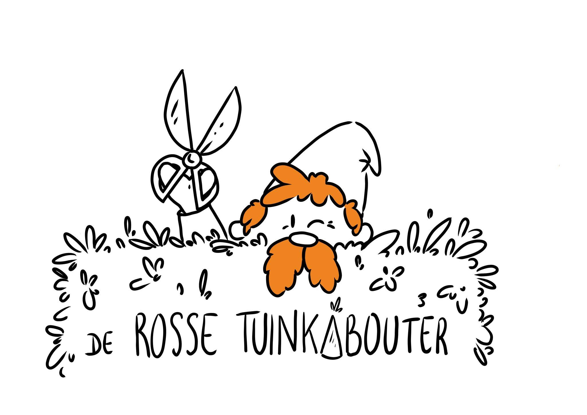
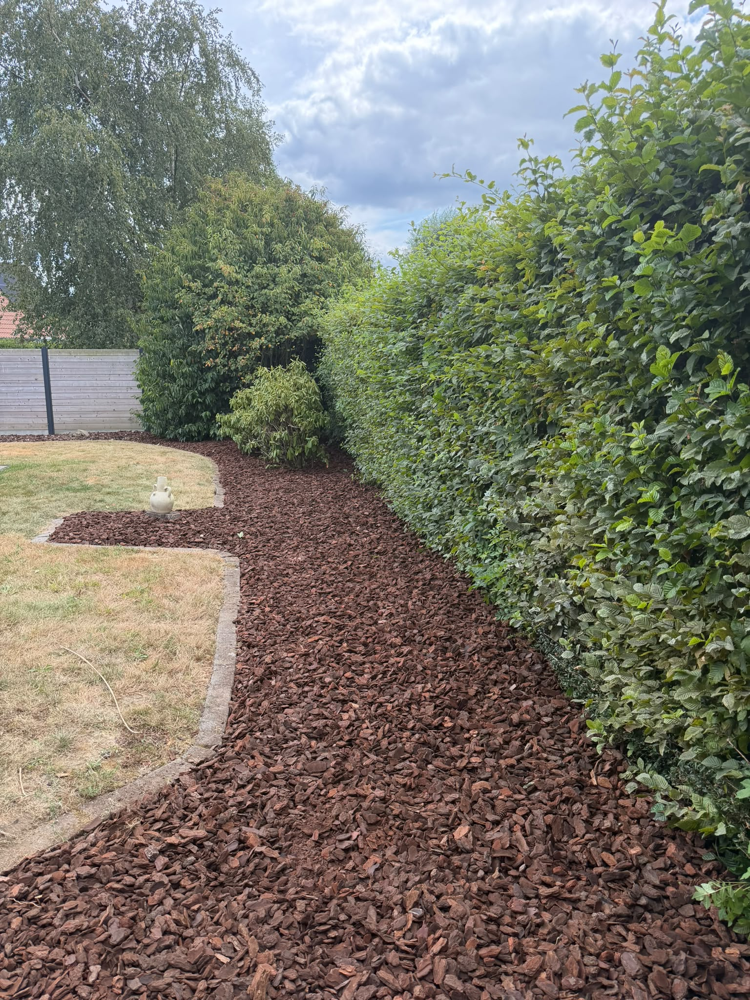
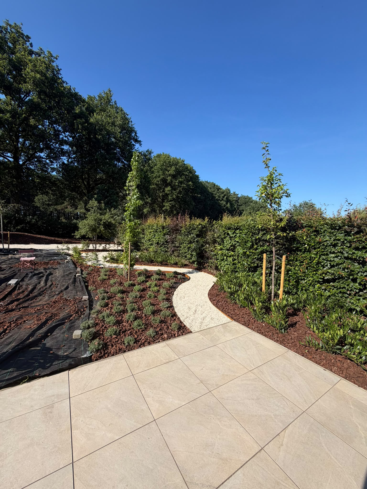
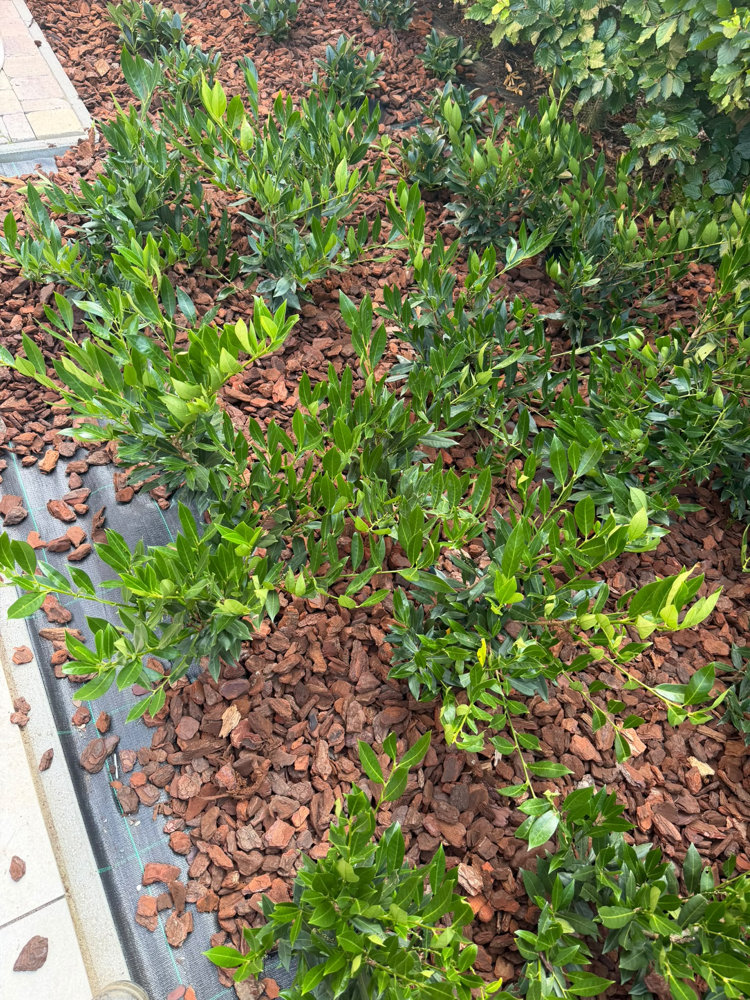
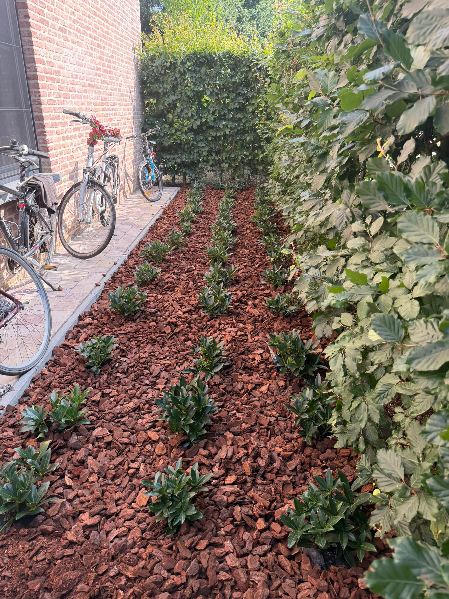
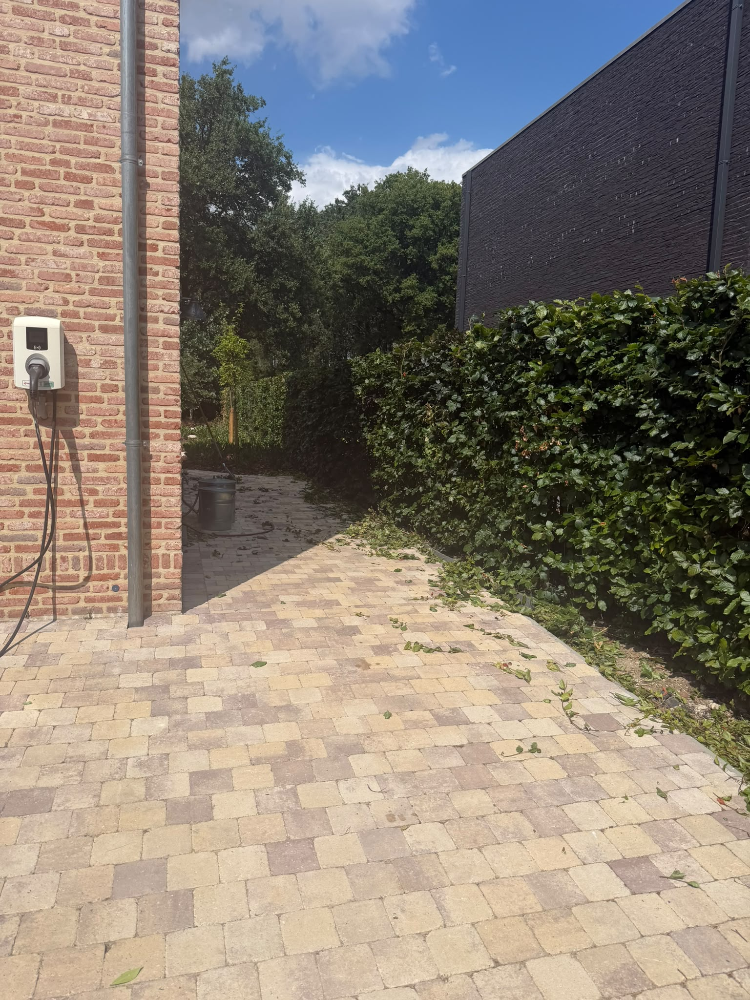
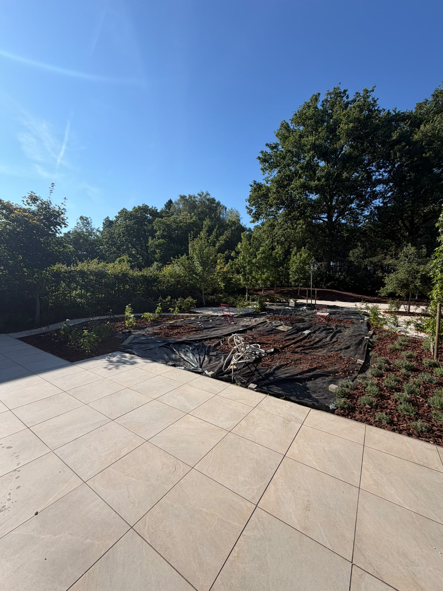
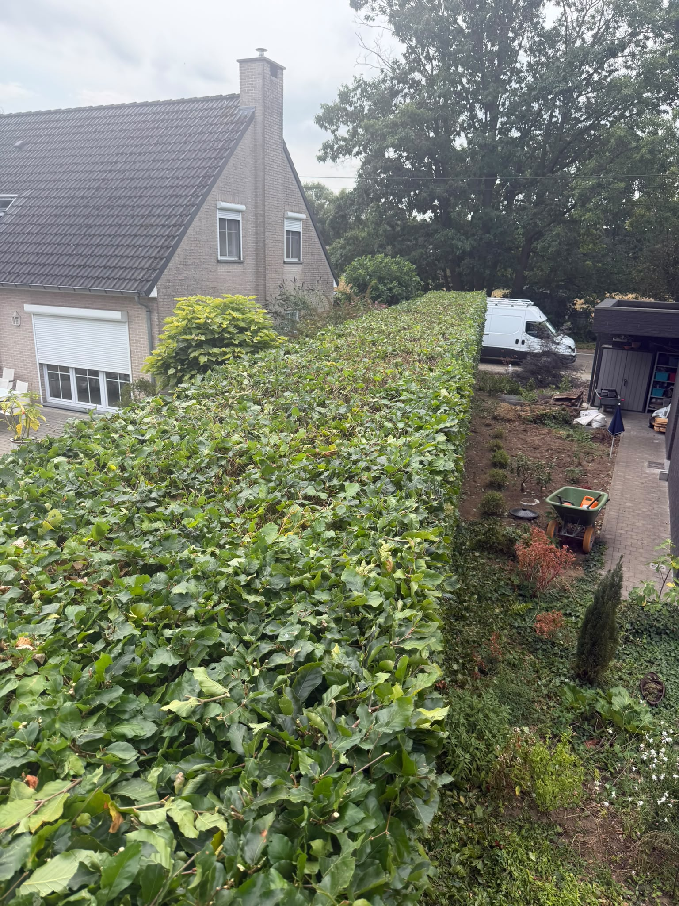

Tuinonderhoud
Maaien, opruimen, onkruid verwijderen, borders verzorgen en uw tuin opnieuw ordelijk maken.

Tuinman in bijberoep 0470 24 64 63Geetbets en omliggende gemeenten
Van hagen en snoeiwerk tot borders, schors en seizoensopkuis: De Rosse Tuinkabouter brengt kleine en middelgrote tuinen weer netjes in vorm.

Praktisch, lokaal, verzorgd
Als zelfstandige tuinman in bijberoep ligt de nadruk op duidelijke afspraken en haalbare werken: onderhoudsbeurten, hagen, borders, kleine aanpassingen en seizoensopkuis.
Diensten
Maaien, opruimen, onkruid verwijderen, borders verzorgen en uw tuin opnieuw ordelijk maken.
Strakke hagen, vormsnoei en het terug in model brengen van struiken en beplanting.
Schors aanbrengen, aanplantingen, borders opfrissen en kleinere verbeteringen rond de woning.
Voorjaarsbeurt, zomeronderhoud, najaarsopkuis en voorbereiding van de tuin op het volgende seizoen.
Realisaties
De aanpak is eenvoudig: snoeien, verzorgen, opfrissen en netjes achterlaten. De foto's geven de stijl van het werk weer.







Werkwijze
Beschikbaar voor kleinere werken op afspraak. Voor grotere of dringende opdrachten wordt eerst bekeken wat realistisch ingepland kan worden.
Contact
Bel rechtstreeks of stuur via sociale media enkele foto's van de tuin. Zo is meteen duidelijk wat er nodig is.